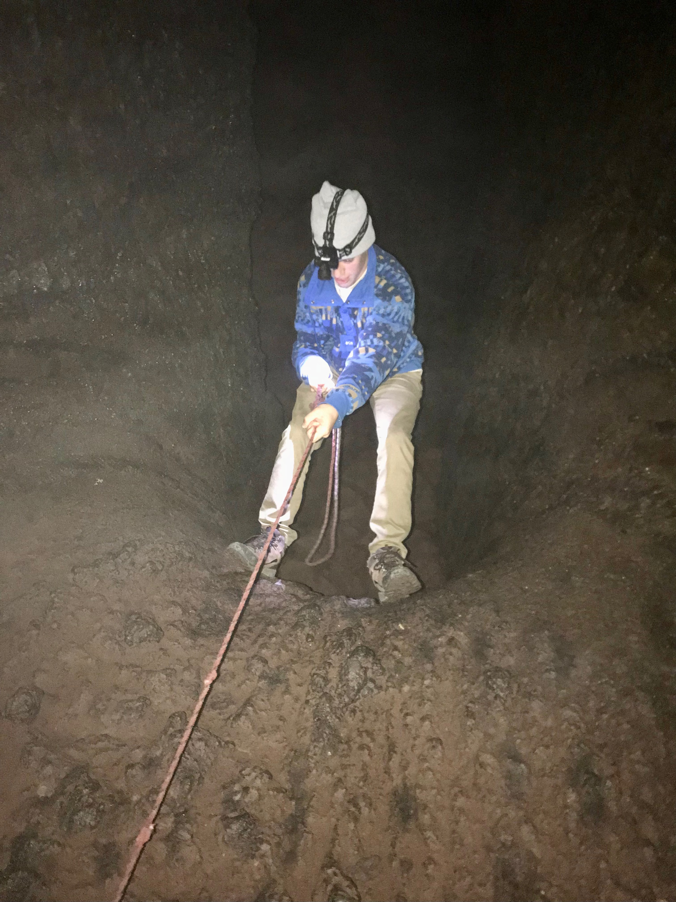

Hi! this is my final project for Intro To WebDev. I'm a senior studying computer science at Portland State University. In my free time I love to do outside stuff such as fishing, surfing, hiking, and recently i've been restoring an original 1966 Dodge Charger.
Click to see my car!